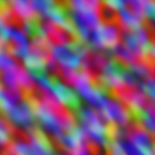

from tglcourse.generation_utils import MSELossToTarget, SirenGenerator, optimise
from tglcourse.utils import *Creating Quick Interfaces with Gradio
In this notebook we’ll see how Gradio let’s you quickly turn a function into a beautiful-looking web application that you can share with others to demo your latest model or pipeline.
I’ve kept this fairly simple, and tried to show the process I’d follow if I was making this from scratch rather than just the final result.
What Should Our Demo Do?
As a first step, we need to decide what our demo should do! Here I load an image and experiment with fitting a small Siren network to it as a way to create an interesting blurred effect:
Loading the image:
im = load_image_pil('images/frog.png').resize((256, 256))
imCreating a SirenGenerator (see the ‘Fun with Generators and Losses’ bonus notebook):
gen = SirenGenerator(dim_hidden=32, num_layers=3)At the moment the output of the generator doesn’t look like much:
tensor_to_pil(gen())
Create a loss function that compares an input to a target image, in this case our frog:
loss = MSELossToTarget(pil_to_tensor(im), size=256)
loss(gen())tensor(0.1525, grad_fn=<MeanBackward0>)Optimise the parameters of the generator based on this loss:
optimise(gen, [loss], n_steps=30)And get the result back as a PIL image:
tensor_to_pil(gen())OK, so far so good - let’s try to serve this process up in an easy-to-use interface.
Wrapping our code in a function
The first step to turning this into a nice web app is wrapping the above in a nice function:
from IPython.utils import iodef sirenify(image, size=256):
gen = SirenGenerator()
loss = MSELossToTarget(pil_to_tensor(image), size=int(size))
with io.capture_output() as captured: # Hide output to keep things clean - remove for debugging
optimise(gen, [loss], n_steps=30)
return tensor_to_pil(gen())sirenify(im)You can see it takes several inputs, each of which we’ll be able to set using the gradio interface. In this case we want to return an image, but you can return multiple different outputs (maybe an image, a caption and a confidence score).
Making the Gradio Interface
With the defined, we can create the interface like so:
import gradio as griface = gr.Interface(fn=sirenify, inputs=[gr.Image(type='pil'), gr.Number(value=256)], outputs=gr.Image())
iface.launch(share=True)Pretty simple! You should be able to upload an image and click ‘Submit’, and if all goes well you’ll soon see the result in the output tab on the right. For example: